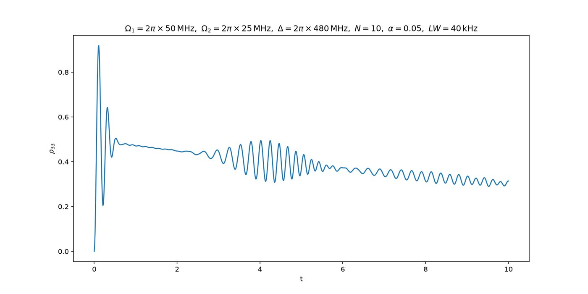
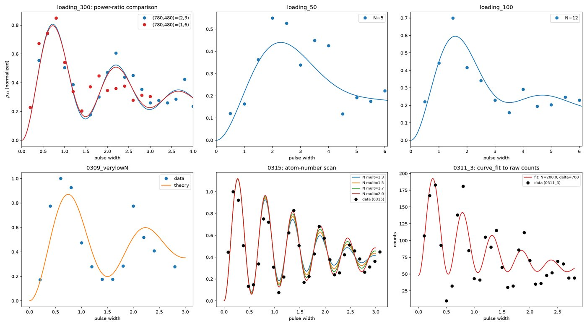
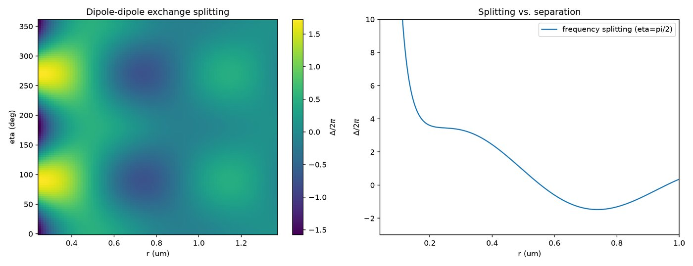
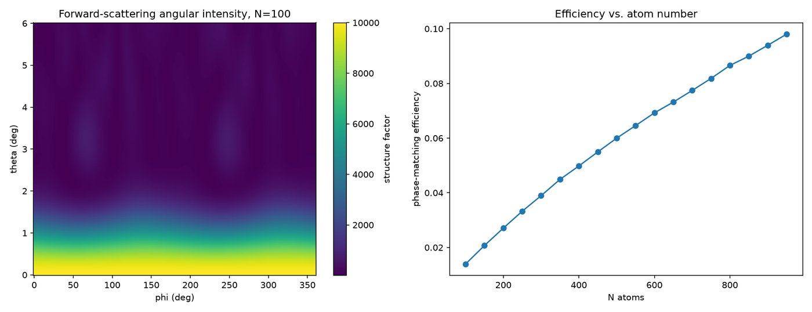

Three independent lines of grad-school exploration that never became a paper
Lower polish bar than the papers above — there's no published figure to validate against, so treat these as exploratory rather than final results.
A Λ-type three-level atomic model, collectively driven and solved via the master equation, used to model superradiant-like collective Rabi dynamics in an atomic ensemble. One version is theory-only; the other Poisson-averages the model over the atom-number distribution and fits it directly to real time-resolved fluorescence data.


Supporting calculations for a two-atom |g⟩, |p⟩, |r⟩ biphoton-generation scheme: Rydberg radial dipole matrix elements via the Kaulakys semiclassical formula, combined with Rb quantum-defect tables, plus a van der Waals blockade-radius estimate.

Coherent forward-scattering efficiency for an ensemble or array of atoms: a structure-factor calculation combined with a Debye–Waller disorder-averaging factor, showing how phase-matching efficiency scales with atom number. A companion script computes the underlying Rb 5P3/2→nS1/2 reduced dipole matrix elements via the ARC (Alkali Rydberg Calculator) package.

jaynes_cummings/jc_theory.py — theory-only Λ-system master-equation model of collective Rabi dynamicsjaynes_cummings/jc_data_fit.py — same model, Poisson-averaged over N and fit to real fluorescence databiphoton/rydberg_dipole_matrix_elements.py — Kaulakys semiclassical Rydberg dipole matrix elements for a biphoton-generation schemerydberg_array_scattering/phase_matching_efficiency.py — structure-factor + Debye-Waller phase-matched forward-scattering efficiencyrydberg_array_scattering/dipole_matrix_elements_arc.py — Rb87 5P3/2→nS1/2 reduced dipole matrix elements via ARC